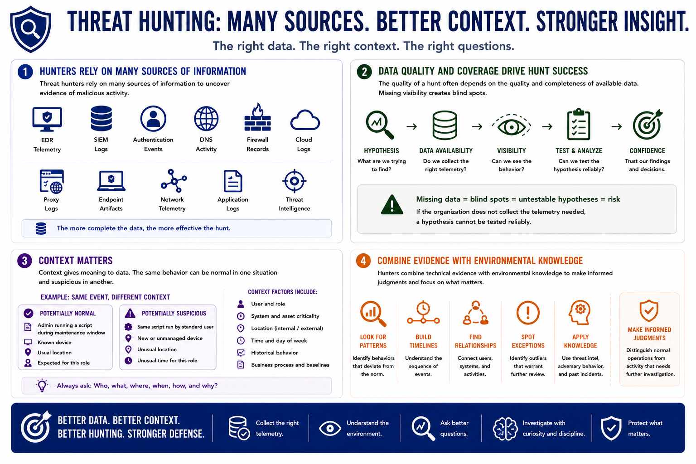

What is Threat Hunting?
Data Sources for Hunting
Connecting to LMS... Progress: in progress
Version 1.0 | Introductory overview of defensive threat hunting practices.

Narration
Threat hunters rely on many sources of information. These may include EDR telemetry, SIEM logs, authentication events, DNS activity, firewall records, cloud logs, proxy logs, endpoint artifacts, network telemetry, and threat intelligence.
The quality of a hunt often depends on the quality and completeness of available data. Missing visibility creates blind spots. A hypothesis cannot be tested reliably if the organization does not collect the telemetry needed to observe the behavior.
Context also matters. An unusual process on one system may be normal on another. A login pattern may be expected for one role but suspicious for a different user, location, time, or system.
Hunters combine technical evidence with environmental knowledge to make informed judgments. They look for patterns, timelines, relationships, and exceptions that help distinguish normal operations from activity that needs further investigation.